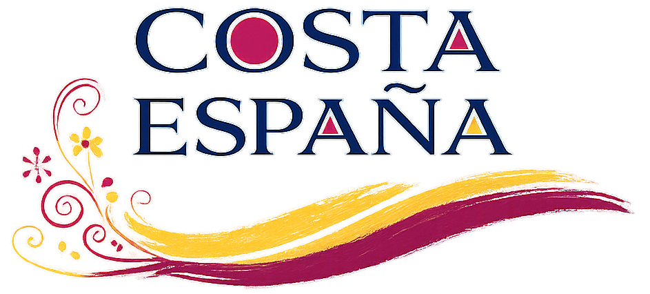
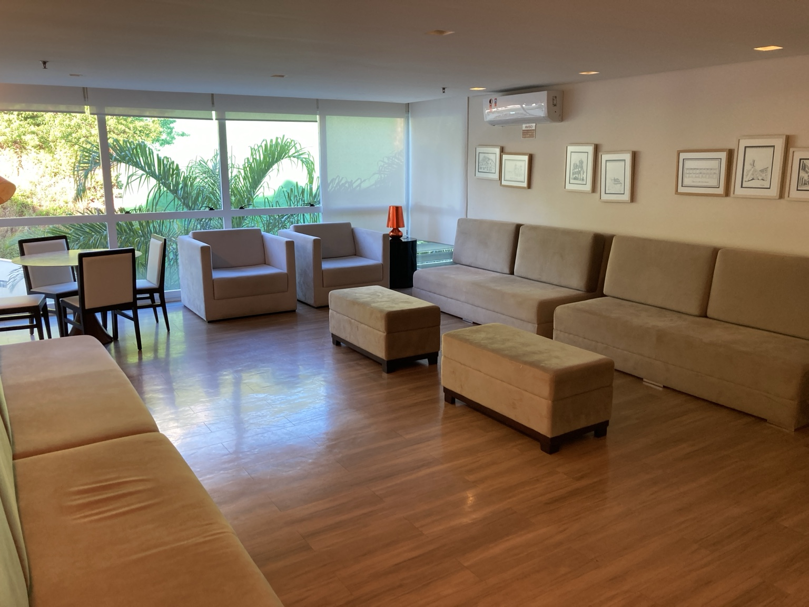
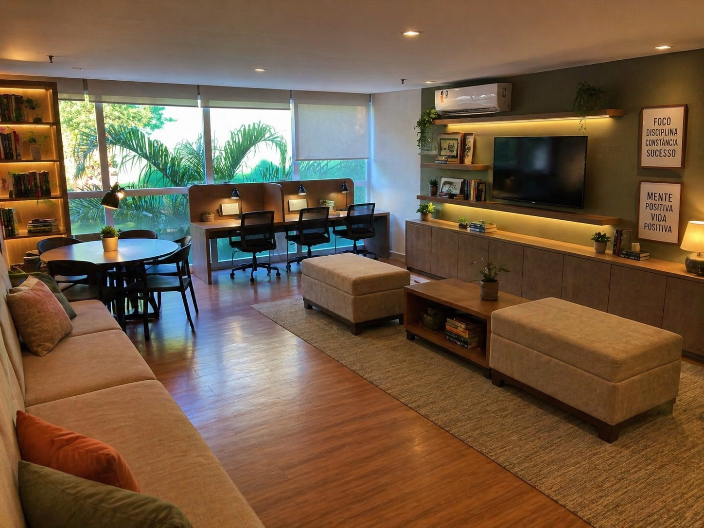
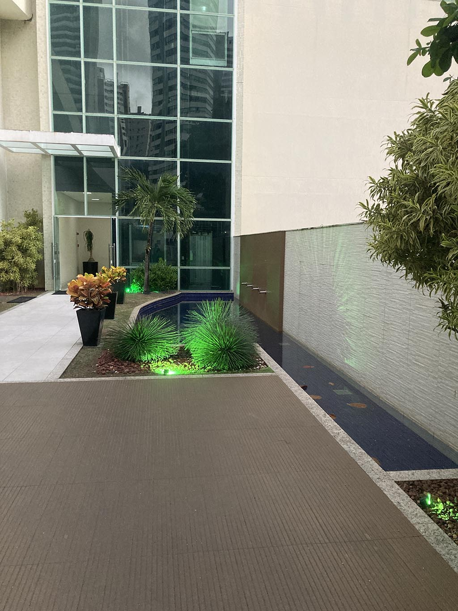
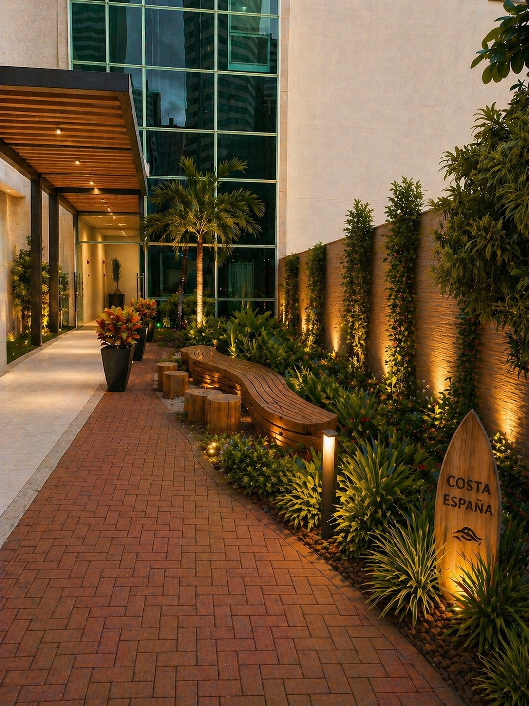
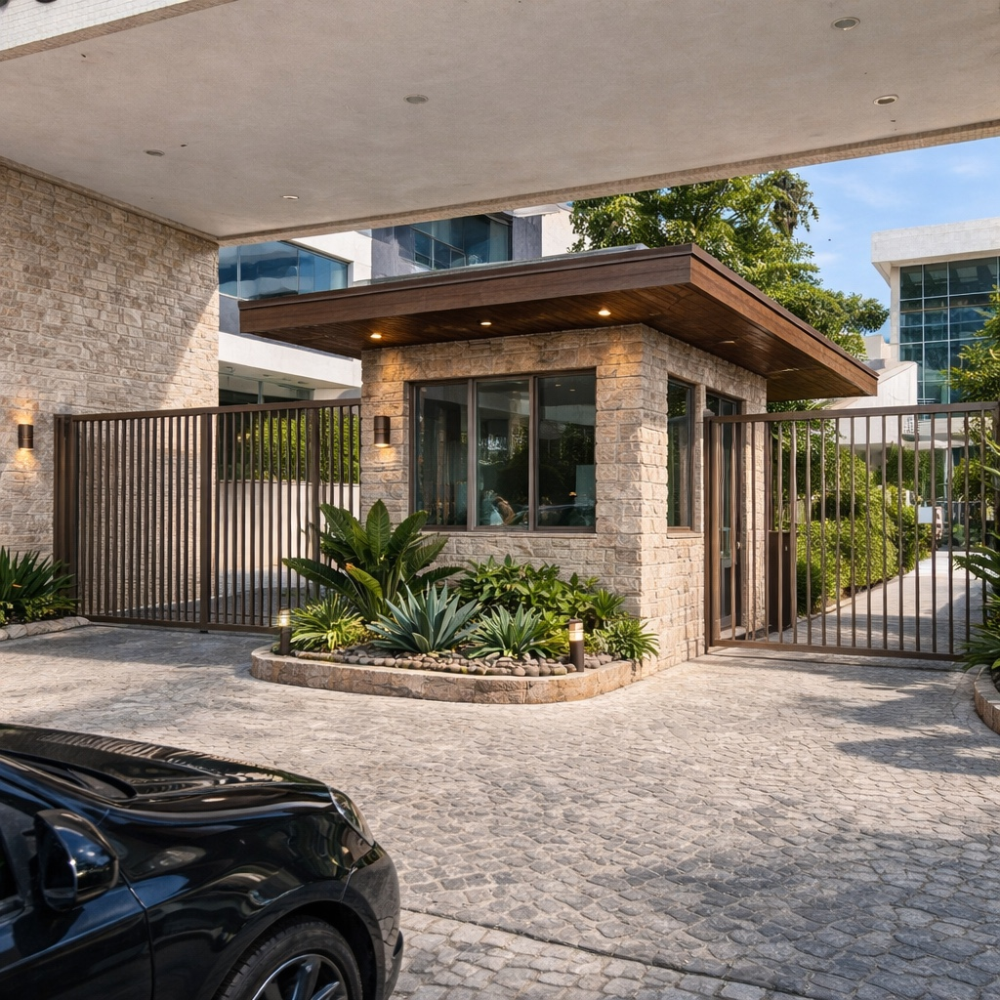
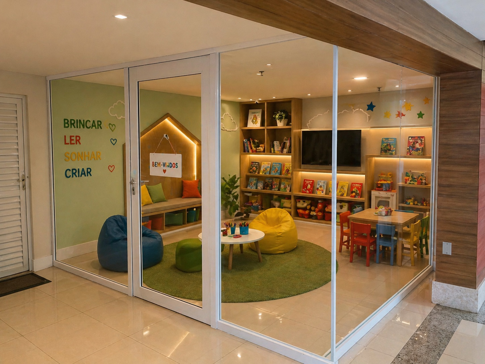
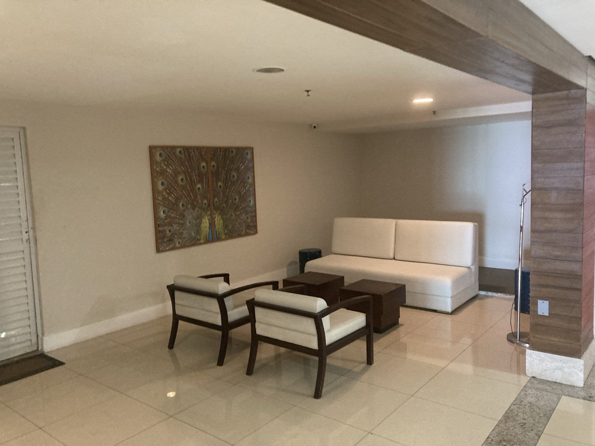
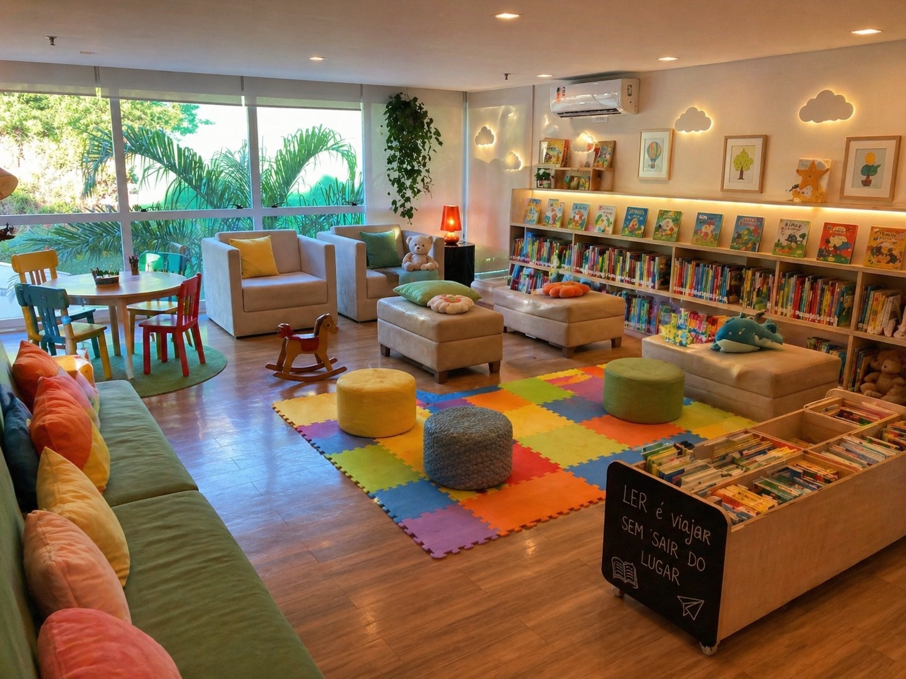
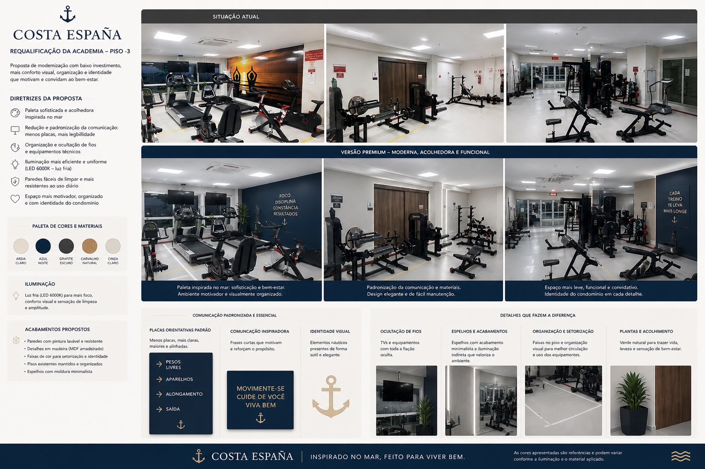

Água
Conta elevada, consumo coletivo, irrigação dos jardins, possíveis vazamentos, setorização e estudo de individualização.

Uma iniciativa colaborativa para organizar ideias, documentos e pautas do Costa España.
Pequenas decisões bem pensadas podem mudar a percepção de valor de um condomínio inteiro.
Ela aparece quando a gestão cuida dos detalhes: comunicação clara, espaços bem pensados, manutenção visual, conforto, segurança, uso inteligente das áreas comuns e uma identidade compatível com a história do Costa España.
Temas de interesse coletivo organizados entre pautas urgentes e estudos de valorização, para facilitar acompanhamento, participação e priorização.
Conta elevada, consumo coletivo, irrigação dos jardins, possíveis vazamentos, setorização e estudo de individualização.
Possibilidade de estudo técnico e financeiro para reduzir custos de áreas comuns e melhorar a sustentabilidade do condomínio.
Discussão sobre ambientes complementares, seguros, silenciosos e bem definidos para crianças e famílias.
Revisão de uso, mobiliário, regras e possibilidades para tornar o espaço mais útil para diferentes faixas etárias.
Estudo de viabilidade para pontos de recarga, regras de uso, medição individual, segurança elétrica e impacto na garagem.
Possibilidade de área simples para banho, tosa higiênica, cuidados rápidos e apoio aos tutores, com higiene e regras claras.
Estudo de viabilidade para serviços leves, como manicure, cabelo ou cuidados rápidos, com agendamento, higiene e regras claras.
Estudo de um ambiente mais funcional para leitura, estudo, espera, conversa e atividades tranquilas, em local a ser avaliado coletivamente.
Melhoria da comunicação, maior participação dos moradores e discussão sobre formatos presenciais, híbridos ou digitais.
Modernização visual de baixo impacto: menos placas, fios ocultos, melhor setorização, iluminação fria e ambiente mais limpo, claro e motivador.
Uso dos elevadores para comunicados curtos sobre convivência, assembleias, prazos e cuidados com ruído nos corredores.
Imagens conceituais para mostrar possibilidades de melhoria, uso inteligente dos espaços e valorização patrimonial. Não são projetos aprovados, orçamentos ou decisões do condomínio.


O Nível 0 fica no início do prédio, antes dos corredores residenciais. A proposta visual sugere um espaço mais organizado para estudo, leitura, espera, pequenas conversas e uso multimídia controlado.


Estudo para valorizar a chegada do prédio com mais verde, iluminação quente, textura, madeira e uma linguagem visual mais costeira. A ideia é qualificar a primeira impressão sem transformar a entrada em área de permanência intensa.

Imagem conceitual para estudar linguagem de materiais, iluminação, paisagismo e presença arquitetônica. Como ainda falta a foto original correspondente, este bloco fica como referência provisória.


O Nível -5 fica na área da piscina. A proposta visual considera um ponto pequeno, hoje pouco aproveitado, que poderia funcionar como mais uma opção infantil — não como espaço de festa ou barulho.


Outro estudo para o mesmo pavimento, reforçando que a ideia não precisa ser uma única brinquedoteca. O condomínio pode avaliar pontos complementares, menores e com regras bem definidas.

Estudo visual mais voltado para leitura infantil, biblioteca e permanência familiar. Como ainda falta o par original correspondente nesta seção, a imagem funciona como alternativa conceitual.

Estudo para modernizar a academia sem descaracterizar o uso: reduzir excesso de placas, ocultar fios, organizar a comunicação visual e criar uma paleta mais limpa e motivadora.
Área para reunir materiais que ajudam os moradores a entender regras, processos e decisões.
Espaço para organizar mensagens, resumos e reflexões já compartilhadas ou em preparação.
Registro organizado da conversa de 30/04/2026: espaços possíveis, comunicação, comissão de pais/moradores e próximos passos.
Material didático para entender os principais blocos da conta e transformar números em pautas construtivas de assembleia.
Ideias para tornar os comunicados mais claros, reduzir ruído e ampliar a participação dos moradores.
Reflexão sobre como pequenas intervenções bem planejadas — pintura, sinalização, organização visual, manutenção e comunicação — podem elevar a percepção de valor do Costa España.
Ideia em desenvolvimento: mostrar que o Costa España já nasceu singular e pode recuperar força de mercado com gestão visual, manutenção inteligente, transparência e cuidado consistente com as áreas comuns.
Ideia em desenvolvimento: organizar informações, documentos, atas, propostas e registros para que as discussões não fiquem perdidas em mensagens soltas de WhatsApp.